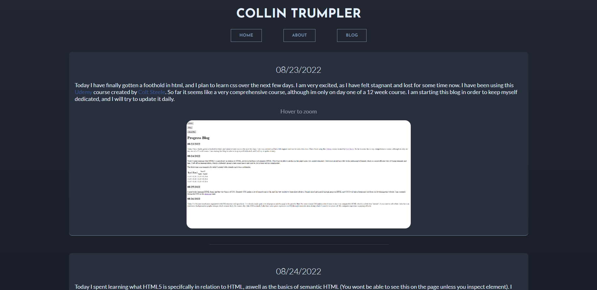
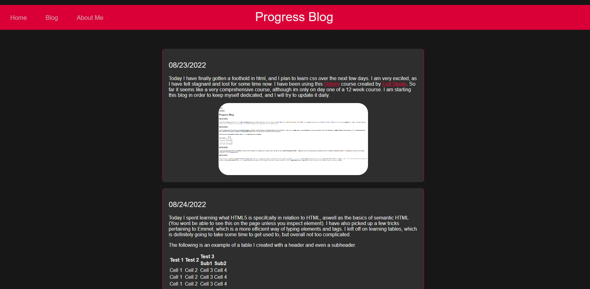
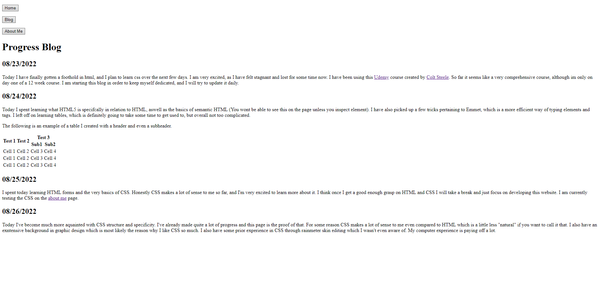

PROGRESS BLOG
December 18th, 2022
I've taken a break from The Odin Project
in order to learn more about HTML and CSS. JavaScript makes more sense to me now, however the problem solving aspect
of it still eludes me. The logic is straight forward but also very difficult if you don't have a reference point.
I recently revamped this portoflio and I am very proud of it. I've noticed that, whilst not crucial, it certainly
helps to have a background in graphic design, since I don't need a web designer to make a decent looking website.
I have many ideas for website designs, however I lack the skills to bring them to fruition. If I could give a good
analogy, it feels like I'm a guitarist trying to learn how to play the clarinet. I have a good foundation in one
aspect of the skill so I have a head start, but it's only getting me so far. In the end, I'm very happy with what
I've created, and I've come a long way.
October 16th, 2022
Today I started Fundamentals Part 5
after completing the Etch-a-Sketch project
(finished product). I am now 89% of the way through the fundamentals portion of TOP,
and hopefully it shouldn't take more than a week to finish the rest. This current section focuses on objects and array methods, which seem to be very important.
Now that that's out of the way, the main purpose of this blog entry is to show the current state of the website, since I reworked it last week and forgot
to post a screenshot.

October 9th, 2022
I have finally made it passed the Rock, Paper, Scissors assignment on
TOP. In the first
week or so I made it 85% of the way through TOP's foundations course, and about another month to make
it from 85% to 87%. To be fair, I barely touched the project during that time so I could spend more time honing my skills instead of
reading articles. I've been lazier than I wanted to be, but I feel like I'm really getting the hang of JavaScript. I would say my
method of spending 13 hours a day studying in the beginning was ultimately excessive and probably made it harder for me to soak up
information. My new strategy for TOP is to use
Net Ninja's
course as a buffer when I'm having trouble processing information. It was only $5, so it was definitely worth the purchase.
August 30th, 2022
I'm going to start posting less now, but make more important updates. I recently stopped the Udemy
course as I have developed my knowledge of HTML and CSS to an intermidiate level, and want to learn
through
more thorough means.
Ironically this means using a free, Ubuntu (Linux) based course called The Odin
Project. It seems very difficult, and very in depth on both front end and back end development.
I
will likely only post on this website
once every few days at most, just because I won't always have much to write about, and I will likely
make a
new portfolio when
the time comes. I spent about 4 hours today just learning and getting used to Ubuntu and git, and while
it's
somewhat tricky, I have full confidence that
I will become very proficient in using them with time and practice.
August 28th, 2022
I spent most of today focusing on reworking the website, and I've gotten it to a point that I really
like, however it still has a long way to go.
I feel more comfortable with CSS than ever, but it feels like i'm just throwing things where I think
they should go and hoping it works. I plan on
doing some code alongs using the Udemy
course, but
also The Net Ninja, and The
Coding Train.
I will also start looking around DevTips channel for an extra
reference. This is the
current state of my website:
I think it's best for me to take a breather and practice
what I've already learned by making
new websites. The next step in the Udemy
course is Bootstrap, a css framework. It seems like a method of using CSS without knowing the basics
of
CSS,
and that scares me because I think it would be detrimental to me in the future. I'm not sure how
long I
will spend
on practicing, but it will likely take a couple of weeks. I realize that I don't need to memorize
everything, and will likely always have to reference
MDN
even
after I get the job I want. It's only been
five days
but I've understood every concept thus far, and I think practicing will help me get my organization
down
and will help me to understand
when to use certain styling methods over others.

August 27th, 2022
I'm writing this on the 28th because I spent 12 hours practicing and fried my poor brain, but to sum
it
up I learned about positions, transitions
and most
importantly flexbox!
I'm particularly
excited about learning and using flexbox because my biggest hurdle so far has been positioning
elements
in a way that doesn't seem messy, and this
is definitely the solution I was looking for.
August 26th, 2022
Today I've become much more aquainted with CSS structure and specificity. I've already made quite a
lot
of progress
and this page is the proof of that. For some reason CSS makes a lot of sense to me even compared to
HTML
which is a
little less "natural" if you want to call it that. I also have an exntensive background in graphic
design which is
most likely the reason why I like CSS so much. I also have some prior experience in CSS through
rainmeter skin editing
which I wasn't even aware of. My computer experience is paying off a lot.

August 25th, 2022
I spent today learning HTML forms and the very basics of CSS. Honestly CSS makes a lot of sense to
me so
far, and I'm very excited
to learn more about it. I think once I get a good enough grasp on HTML and CSS I will take a break
and
just
focus on developing this website.
I am currently testing the CSS on the about me page.
August 24th, 2022
Today I spent learning what HTML5 is specifcally in relation to HTML, aswell as the basics of
semantic
HTML
(You wont be able to see this
on the page unless you inspect element). I have also picked up a few tricks pertaining
to Emmet, which is a more efficient way of typing elements and tags. I left off on learning tables,
which is
definitely going to take
some time to get used to, but overall not too complicated.
The following is an example of a table I created with a header and even a subheader.
| Test 1 |
Test 2 |
Test 3 |
| Sub1 |
Sub2 |
| Cell 1 |
Cell 2 |
Cell 3 |
Cell 4 |
| Cell 1 |
Cell 2 |
Cell 3 |
Cell 4 |
| Cell 1 |
Cell 2 |
Cell 3 |
Cell 4 |
August 23rd, 2022
Today I have finally gotten a foothold in html, and I plan to learn css over the next few days. I am
very
excited, as I have felt stagnant and lost for some time now. I have been using this Udemy
course
created by Colt Steele. So far it seems like a
very comprehensive course, although im only on day one of a 12 week course. I am starting this blog
in
order
to
keep myself dedicated, and I will try to update it daily.
